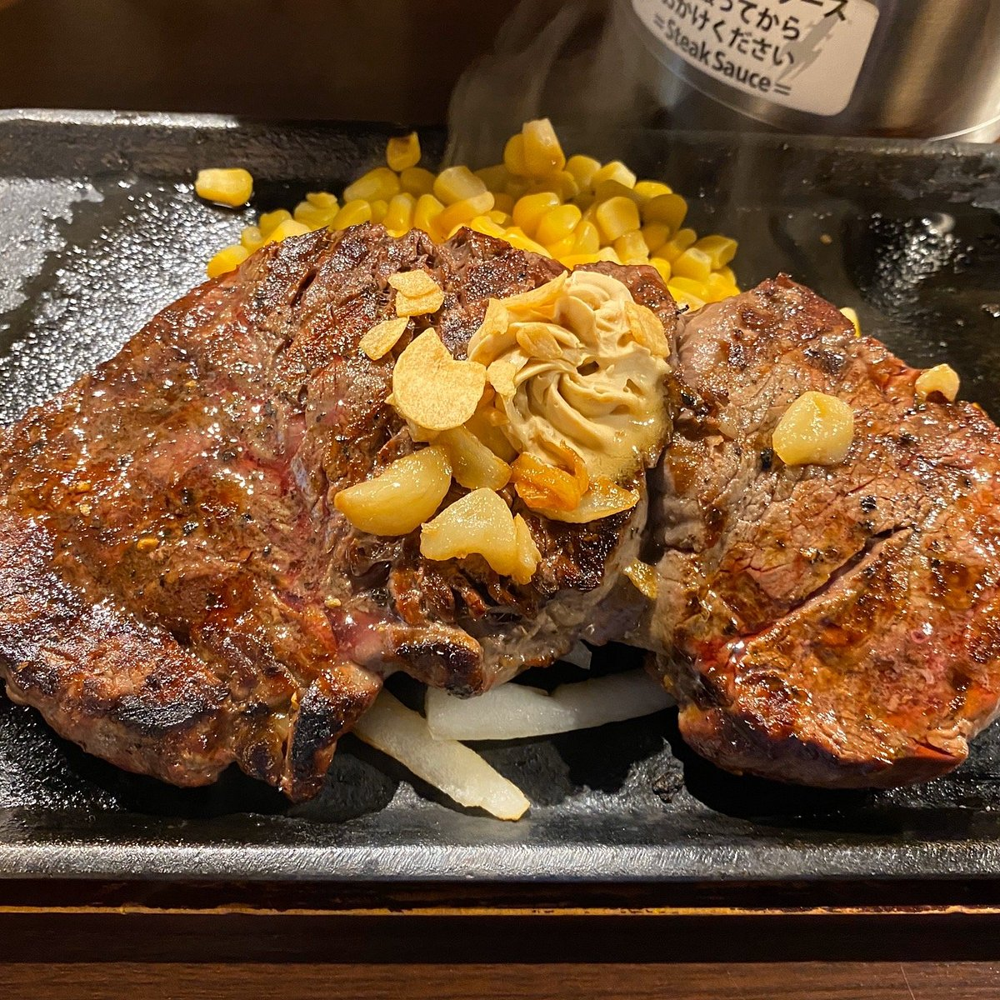

Ikinari Steak
Home

Description
An Ikinari Steak features a thick, high-quality cut of beef served sizzling on a hot cast-iron plate with garlic herb butter and soy-onion sauce. Preparing the dish involves making the garlic butter and soy-onion sauce, searing the seasoned steak in a hot skillet, and assembling it with classic sides before finishing with the sizzling sauce.
Ingredients
The Steak and Base
- Ribeye or Striploin
- Sal & Pepper
- Butter
- Sweet Corn & Sweet Onions
Steak Sauce
- Soysauce: 4 tablespoons
- Mirin: 2 tablespoons
- Sake: 2 tablespoons
- Garlic: 1 clove (grated)
- Onion: 2 tablespoons (finely grated)
- Sugar: 1 teaspoon
Garlic Butter Topping
- Unsalted Butter: 4 tablespoons (softened)
- Garlic Paste: 1 teaspoon
- Soy Sauce: 1/2 teaspoon
Instructions
- Sauce: Combine all sauce ingredients in a small saucepan. Simmer over medium-low heat for 3–5 minutes until the alcohol cooks off and the flavors blend. Set aside.
- Butter: Mix the softened butter, garlic paste, and soy sauce until smooth. Roll into a log using plastic wrap and chill.
- Take the steak out of the fridge 30 minutes before cooking to reach room temperature.
- Pat it completely dry with paper towels and season generously with salt and pepper right before cooking.
- Heat a heavy cast-iron skillet over high heat until smoking, then add the vegetable oil.
- Sear the steak for 2 to 3 minutes per side without moving it to form a deep, brown crust. Adjust the timing depending on your desired doneness.
- Remove the steak and let it rest for 5 minutes.
- In the same skillet with the leftover beef fat, quickly sear the onion slices and corn kernels for 1–2 minutes until slightly charred.
- Place the seared onions and corn on a hot plate or serving dish.
- Slice the rested steak into thick bite-sized pieces and lay them over the vegetables.
- Top the steak with a generous slice of the garlic butter.
- The Ikinari Finish: Pour the warm soy-onion sauce over the sizzling steak right before eating.
-
Prep the Sauce and Butter:
- Sauce: Combine all sauce ingredients in a small saucepan. Simmer over medium-low heat for 3–5 minutes until the alcohol cooks off and the flavors blend. Set aside.
- Butter: Mix the softened butter, garlic paste, and soy sauce until smooth. Roll into a log using plastic wrap and chill.
-
Prep the Steak:
- Take the steak out of the fridge 30 minutes before cooking to reach room temperature.
- Pat it completely dry with paper towels and season generously with salt and pepper right before cooking.
-
Sear the Steak:
- Heat a heavy cast-iron skillet over high heat until smoking, then add the vegetable oil.
- Sear the steak for 2 to 3 minutes per side without moving it to form a deep, brown crust. Adjust the timing depending on your desired doneness.
- Remove the steak and let it rest for 5 minutes.
-
Cook the Sides:
- In the same skillet with the leftover beef fat, quickly sear the onion slices and corn kernels for 1–2 minutes until slightly charred.
-
Assemble and Serve:
- Place the seared onions and corn on a hot plate or serving dish.
- Slice the rested steak into thick bite-sized pieces and lay them over the vegetables.
- Top the steak with a generous slice of the garlic butter.
- The Ikinari Finish: Pour the warm soy-onion sauce over the sizzling steak right before eating.